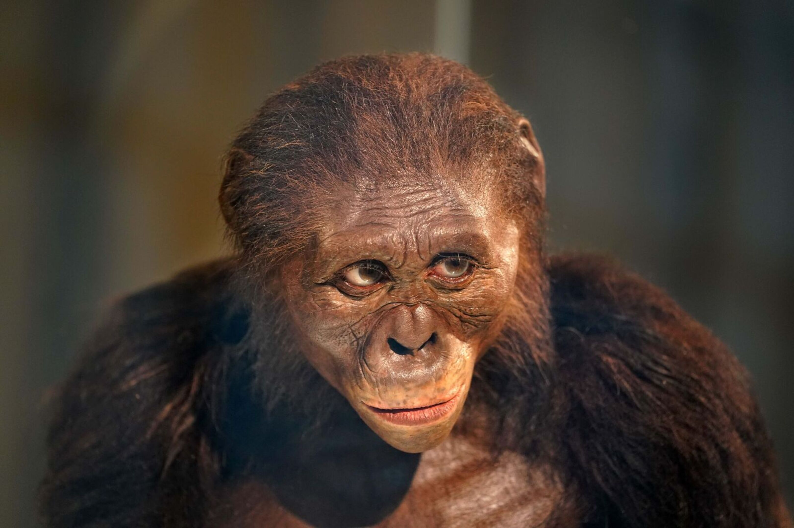

The history of the human species goes as far back as 300,000 years.
There have been many changes in our history that have led the human
species to
where it is now. Three significant revolutions that changed
human society and behavior. Throughout this journey we weren't
alone. We had other species of humans that roamed the Earth
before us and alongside us. There is still much speculation
as to what led to the extinction of our counterparts. Through
the study of these other human species, we can uncover the
secrets of our past.